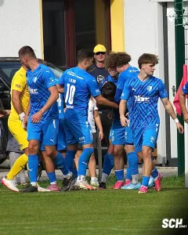
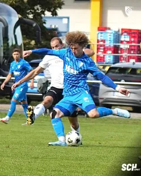
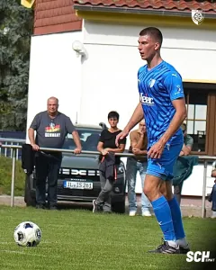
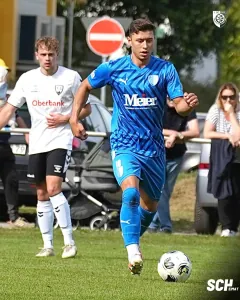
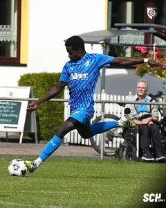
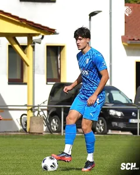
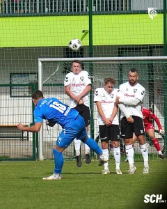
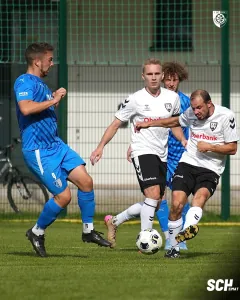
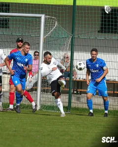
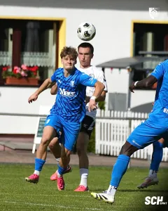

Geduld belohnt: Wolanski schießt die Ludwig-Elf zum Auswärtssieg
Ein Pfosten, ein Querbalken und lange kein Tor. Die Ludwig-Elf musste am Samstagnachmittag in Geraberg viel Geduld aufbringen, belohnte sich aber doch noch für einen über weite Strecken bestimmenden Auftritt. Maciej Wolanski erzielte in der 81. Minute den entscheidenden Treffer zum 1:0-Auswärtssieg bei der Spielvereinigung Geratal. Nach dem 4:0 gegen Suhl legt der SCH damit den zweiten Sieg in Folge nach und nimmt ein gutes Gefühl mit in die besondere Pokalwoche.
Viel Ballbesitz, lange keine Belohnung
Die Rollen auf dem Platz waren früh verteilt. Die Blau-Weißen bestimmten über weite Strecken das Geschehen, Geratal verteidigte und hielt die Partie offen. Für die Mannschaft von Alexander Ludwig bedeutete das vor allem eines: geduldig bleiben und immer wieder nach einer Lücke suchen.
Die ganz großen Möglichkeiten ließen allerdings auf sich warten. Erst in der 35. Minute wurde es richtig gefährlich. Ole Hoch kam zum Abschluss und traf den Pfosten. Der SCH war dem Führungstreffer nun deutlich näher. Kurz vor der Pause folgte die nächste Gelegenheit. Adrian Wilhelm kam in der 41. Minute per Kopf zum Abschluss, setzte den Ball aber knapp am Tor vorbei.
So ging es trotz der spielerischen Vorteile torlos in die Kabinen. Das 0:0 zur Pause passte nur bedingt zum Verlauf. Die Ludwig-Elf hatte mehr vom Spiel und auch die besseren Möglichkeiten, Geratal hielt das Ergebnis jedoch offen.
Wolanski scheitert am Gerataler Schlussmann
Nach dem Seitenwechsel brauchte der SCH nicht lange, um wieder gefährlich zu werden. Drei Minuten waren gespielt, als Maciej Wolanski die nächste gute Möglichkeit hatte. Diesmal verhinderte der Gerataler Torhüter mit einer starken Parade die Führung.
Das Muster der Partie änderte sich nicht. Die Blau-Weißen blieben tonangebend, mussten aber weiter nach dem entscheidenden Moment suchen. Mit zunehmender Spielzeit wurde aus der Geduldsprobe auch eine Frage der Nerven. Ein Treffer wollte trotz der Möglichkeiten einfach nicht fallen.
Geratal konnte sich deshalb weiterhin Hoffnungen auf einen Punkt machen. Für den SCH bestand gleichzeitig die Gefahr, dass ein Nachmittag mit viel Aufwand und mehreren guten Gelegenheiten ohne den erhofften Ertrag enden könnte.
Voilenko trifft nur den Querbalken
In der 76. Minute fehlten erneut nur Zentimeter. Nach einer Ecke kam Artur Voilenko mit dem Kopf an den Ball. Sein Abschluss flog an den Querbalken. Zum zweiten Mal an diesem Nachmittag stand das Aluminium zwischen den Blau-Weißen und der Führung.
Spätestens jetzt war klar, wie schmal der Grat an diesem Nachmittag war. Der SCH hatte das Spiel über weite Strecken bestimmt, Pfosten und Querbalken getroffen und weitere Möglichkeiten liegen gelassen. Auf der Anzeigetafel stand trotzdem noch immer ein 0:0. Fünf Minuten später änderte sich das endlich.
81. Minute: Wolanski erlöst den SCH
Maciej Wolanski setzte in der 81. Minute den entscheidenden Treffer. 1:0 für die Ludwig-Elf.
Nach all den vergebenen Möglichkeiten war es die verdiente Belohnung für einen Auftritt, bei dem der SCH nicht die Geduld verlor. Gerade weil sich der Treffer so lange angekündigt hatte und trotzdem nicht fallen wollte, war die Erleichterung entsprechend groß.
Für die Schlussphase war die Ausgangslage damit plötzlich eine andere. Nun musste der knappe Vorsprung verteidigt werden. Geratal blieben noch die regulären Schlussminuten und anschließend fünf Minuten Nachspielzeit. Die Blau-Weißen brachten das Ergebnis über die Zeit. Als schließlich Schluss war, stand ein 1:0, das deutlich knapper ausfiel, als es die Anzahl der beschriebenen Möglichkeiten vermuten lässt.
Zwei Siege, zweimal ohne Gegentor
Für den SCH sind es drei Punkte, die zum richtigen Zeitpunkt kommen. Bereits eine Woche zuvor hatte die Ludwig-Elf beim 4:0 gegen den 1. Suhler SV 06 überzeugt. Nun folgte ein ganz anderer Sieg. Weniger deutlich, lange offen und erst spät entschieden.
Gerade das macht diesen Erfolg wertvoll. Nach sieben Spieltagen steht die Mannschaft nun bei 13 Punkten. Noch wichtiger ist der Blick auf die vergangenen 180 Ligaminuten. Fünf Tore erzielt, keines kassiert und sechs Punkte geholt. Nach der 1:3-Niederlage in Weida hat die Mannschaft damit eine klare Antwort auf dem Platz gegeben.
In Geraberg musste sie dafür bis zur 81. Minute arbeiten. Genau solche Siege bleiben manchmal länger hängen als ein deutlicher Nachmittag.
Mit einem Sieg in die Pokalwoche
Jetzt verändert sich die Bühne. Am kommenden Sonntag, 4. Oktober, steht um 14:00 Uhr das Achtelfinale im Thüringenpokal auf dem Programm. Dann kommt Regionalligist FC Rot-Weiß Erfurt an den Gesundbrunnen.
Auch die Rot-Weißen reisen mit einem bemerkenswerten Erfolg an. Der Tabellenführer der Regionalliga Nordost lag am Samstag beim 1. FC Lokomotive Leipzig zwischenzeitlich mit 1:3 zurück und gewann die Partie noch mit 4:3. Der Siegtreffer fiel tief in der Nachspielzeit. Rot-Weiß bleibt damit in der Regionalliga ungeschlagen.
Jetzt beginnt die Pokalwoche.
Spieldaten
Spielvereinigung Geratal – 1. SC 1911 Heiligenstadt 0:1 (0:0)
Spielvereinigung Geratal
Bradsch – Wollenschläger (80. Lange) – Meyer – Reykowski (67. Bartholome) – Möller – Glatz – Kellner – Roth – Hübner – Parlesak – Kubitza (80. Müller)
SC Heiligenstadt
Stankovic – Wolanski (83. Michalek) – Köhler (83. Simon) – Abdoul Aziz – Jeschke (90. Dornieden) – Göbel – Lerch – Hoch – Wilhelm – Voilenko – Fiedler (67. Vogt)
Schiedsrichter
Gäbler
Zuschauer
82
Tore
0:1 Wolanski (81.)










Quelle: www.sc1911-heiligenstadt.de · Stand 06.10.2026